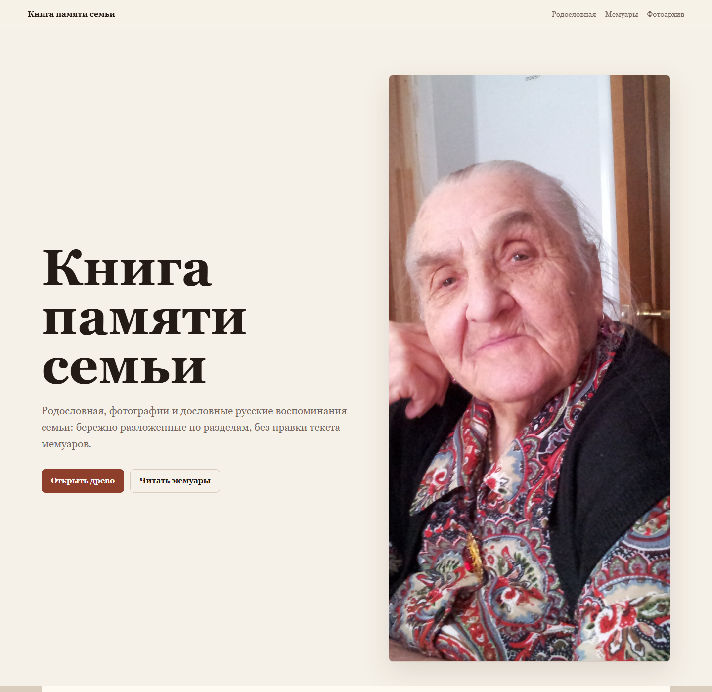
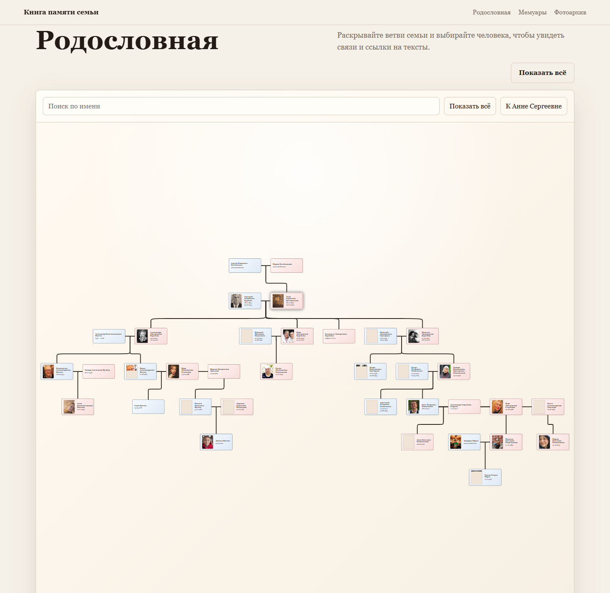
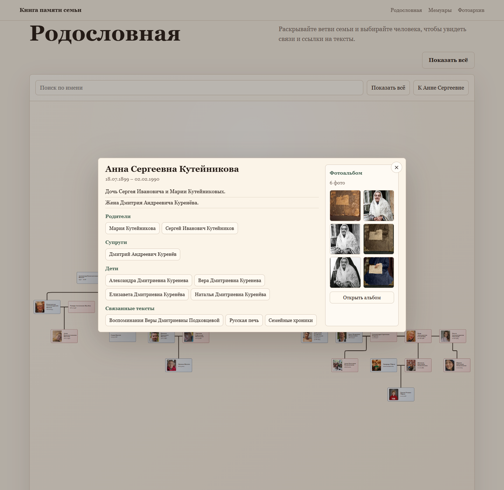
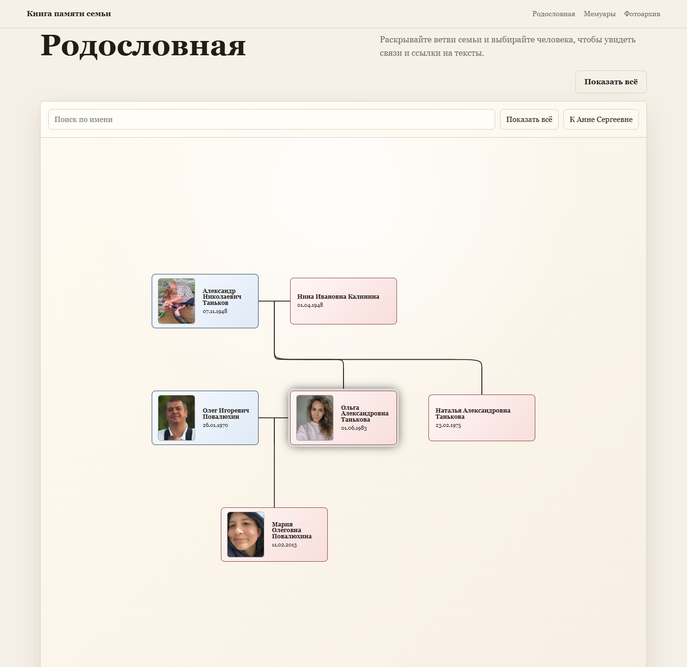
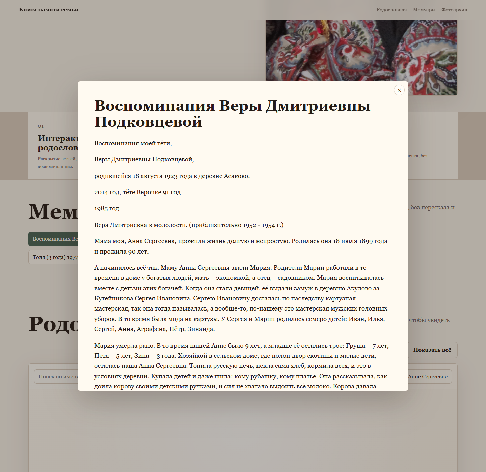
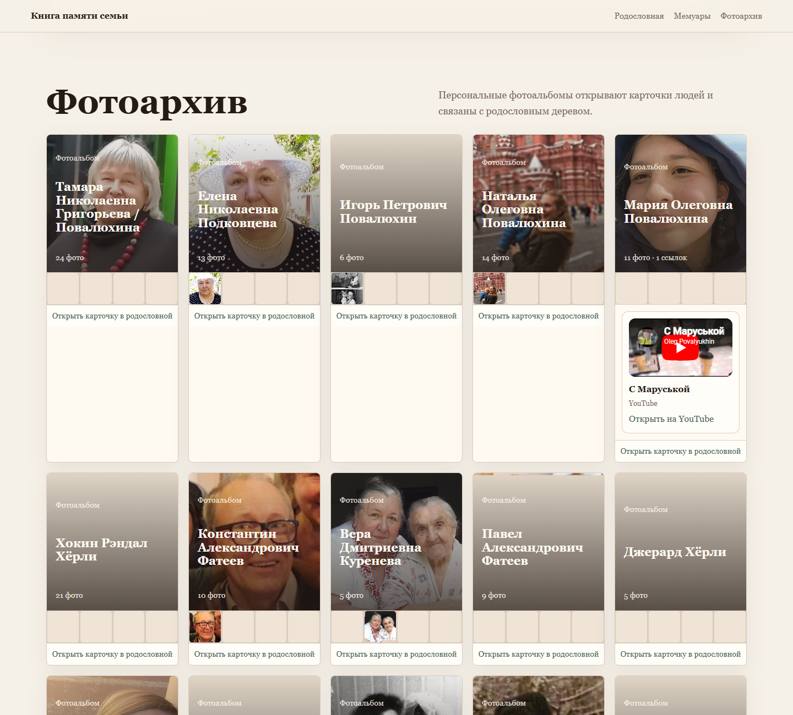

Родословная
Показывает людей и семейные связи между ними.
Это простая инструкция для родственников. Здесь без сложных слов показано, как открыть родословную, найти человека, почитать мемуары и посмотреть фотографии или видео.

Показывает людей и семейные связи между ними.
Открывают тексты и воспоминания для чтения.
Помогают увидеть человека и материалы о нём.
Откройте раздел «Родословная» и нажмите на нужного человека.
Перейдите в раздел «Мемуары» и выберите название нужного текста.
Откройте карточку человека или раздел «Фотоархив».
Видео может быть в альбоме или вести на внешний сервис.
Родословная показывает, кто с кем связан: родители, супруги, дети и другие родственники.


Карточка человека собирает самое важное о нём в одном месте.
Это сделано специально, чтобы было легче разобраться в семье. После закрытия карточки дерево перестраивается вокруг выбранного человека.


В разделе «Мемуары» собраны тексты и воспоминания. Они открываются в отдельном окне, чтобы их было удобно читать.
Фото и видео собраны в альбомы. Иногда видео хранится прямо внутри сайта, а иногда открывается через внешний сервис, например YouTube.

Ничего страшного не произойдёт. Сайт можно спокойно смотреть, нажимать и изучать. Обычными действиями вы ничего не испортите.
Самый простой путь: откройте родословную, нажмите на знакомого человека, потом откройте его карточку.
Это не ошибка. Сайт специально перестраивает дерево вокруг выбранного человека, чтобы было легче понять его ветку семьи.
Либо в карточке конкретного человека, либо в разделе «Фотоархив», если хочется просто посмотреть альбомы.
Откройте родословную, нажмите на знакомого человека, посмотрите его карточку, а потом перейдите к текстам, фотографиям или видео. Так сайт становится понятнее всего.